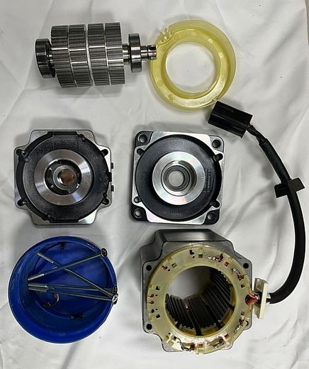

29TECH
Semiconductor equipment parts, service & retrofit.
From Kumamoto to Asia — CMP, etch, wet, CVD, implant, vacuum, ESC and precision parts, all through one contact.
Find the parts we repair — by part number.
Process & tool units
 RF & Power Supplies816 items
RF & Power Supplies816 items Plasma Sources & Ozone193 items
Plasma Sources & Ozone193 items ESC & Heaters227 items
ESC & Heaters227 items Chamber & Process Parts605 items
Chamber & Process Parts605 items CMP Parts365 items
CMP Parts365 items Wet & Clean Parts101 items
Wet & Clean Parts101 items Furnace, Diffusion & Implant195 items
Furnace, Diffusion & Implant195 items Lithography Units & Lasers333 items
Lithography Units & Lasers333 items Metrology & Inspection Units196 items
Metrology & Inspection Units196 itemsVacuum, flow & thermal
 Vacuum Pumps757 items
Vacuum Pumps757 items Valves545 itemsMFC & Flow Control346 items
Valves545 itemsMFC & Flow Control346 items Vacuum & Pressure Gauges492 itemsChillers & Temperature Control164 items
Vacuum & Pressure Gauges492 itemsChillers & Temperature Control164 itemsHandling, motion & control
 Wafer Handling & Robots585 items
Wafer Handling & Robots585 items
Motors & Encoders573 items Drives & Inverters635 items
Drives & Inverters635 items Controllers & PCBs897 itemsSensors & Vision448 items
Controllers & PCBs897 itemsSensors & Vision448 items Test Systems & Instruments256 items
Test Systems & Instruments256 items


Our capabilities
CMP · our core strength
CMP tools, parts and consumables.
Tool service · core-parts repair · consumables · upgrades — AMAT and EBARA.
 CMP repair at the partner factory
CMP repair at the partner factory
 Partner factory
Partner factoryLITHOGRAPHY
Exposure, track and metrology tools.
Parts repair, refurbishment and maintenance — through our technology partner and cooperating companies.
 Partner factory
Partner factoryParts
Compatible precision parts to OEM part numbers.
Seals · Si / SiC · metal · engineering plastics

Test Hardware
Test and reliability hardware.
Load boards · burn-in boards · EM socket DUTs · custom equipment

 Partner factory
Partner factoryKumamoto
Based in Kumamoto, close to our customers.
Head office in Kumamoto City; Kumamoto factory (Aso) in preparation.
 Kumamoto factory (Aso) — after-renovation concept
Kumamoto factory (Aso) — after-renovation conceptTechnology partner
Repair and manufacturing at our partner's factory.
Machining, refurbishment, assembly and inspection at our partner's factory — quality assurance is the responsibility of 29TECH in Kumamoto.
 Technology partner's office building
Technology partner's office buildingGlobal network
Business network across Asia.
Group track record: Intel · Micron · SK hynix · UMC · Texas Instruments and others
 Partner factory
Partner factory